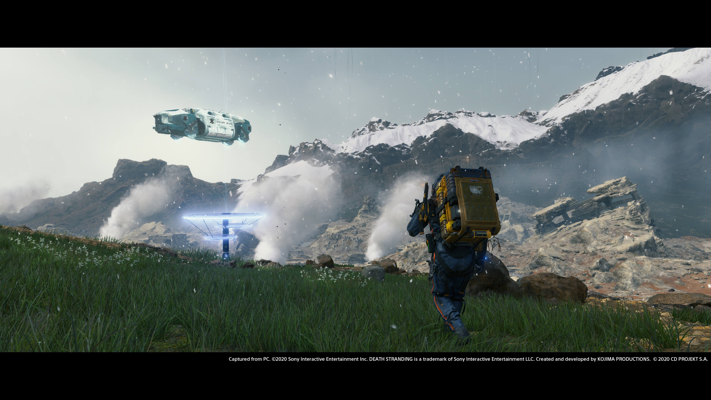

專案作品 Portfolio

死亡擱淺
作者 ／ 小島秀夫
出版社 ／ 旗標出版
出版日期 ／ 2023/11/30
商品語言 ／ 中文
級別 ／ 保護級
定價 ／ NT$ 1,080
分崩離析的世界
在這個充滿挑戰的世界中，我們需要重新連結彼此，建立更深的理解與共鳴。透過這個過程，我們將一起探索人類的情感與經歷，尋找那些能夠觸動心靈的故事。
扮演「送貨員」，在這個被「死亡擱淺」影響而撕裂的世界。玩家將從新美國東岸的「主結市」出發一路向西岸前進。
重新連結這破碎世界的旅程
 在路上除了運送物資給各個據點，還要讓各地連上「開若爾網路」以便聯繫及取得周遭的資訊。
在路上除了運送物資給各個據點，還要讓各地連上「開若爾網路」以便聯繫及取得周遭的資訊。
 有一種敵人被稱呼為「BT」，意為「擱淺體」。BT只會在降下「時間雨」（Time Fall）時出現，且沒有實體。
有一種敵人被稱呼為「BT」，意為「擱淺體」。BT只會在降下「時間雨」（Time Fall）時出現，且沒有實體。